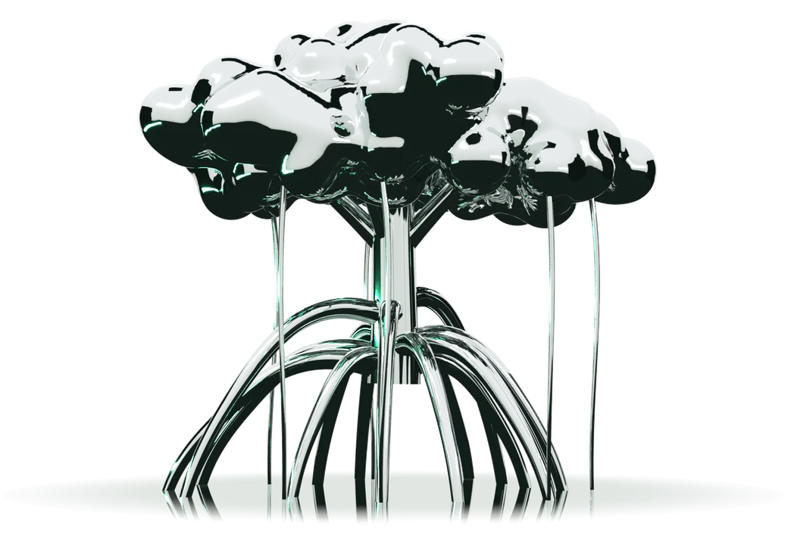

Bibliothèque de recherche pharma
Ce qui pousse au-dessus,ce qui tient en dessous.
Ma recherche sur la pharma et la santé : les notes, les dates qui feront bouger les cours, et des prévisions écrites avant les résultats, puis notées par eux.

+9 m, dans les feuilles
La canopée
Ce qui affleure en premier : mes notes, les dépôts SEC et les mouvements qui comptent, du plus récent au plus ancien.
0 m, la surface
La ligne d’eau
Là où une thèse rencontre le marché : chaque date qui fera bouger un cours, posée sur l’horizon des six prochains mois.
Toutes les dates à venir
−3 m, sous la surface
La marée
Mes prévisions, écrites avant la publication et horodatées par Git. Quand la marée monte avec les résultats, chacune est notée, juste ou fausse.
Mes prédictions
Écrire une prédiction
−8 m, dans les racines
Les racines
Les principes auxquels chaque note est tenue. Tout ce qui dépasse de l’eau repose sur eux.
−14 m, au fond
La bibliothèque
Chaque valeur suivie, enracinée dans son métier. Ouvre une tuile pour le dossier complet : cours, comptes, thèse, dépôts et prédictions.
Rien ne correspond à ces filtres.